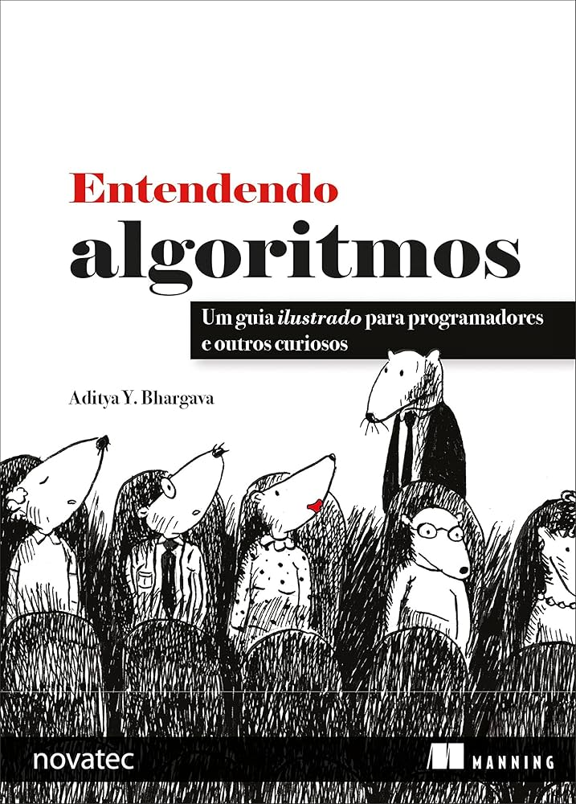
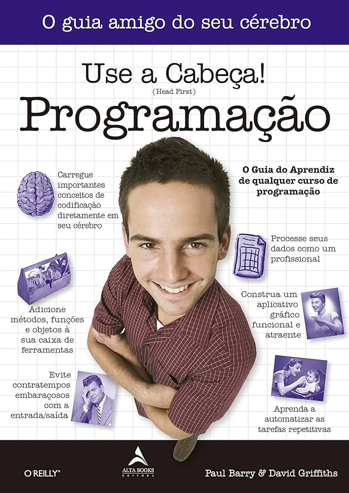
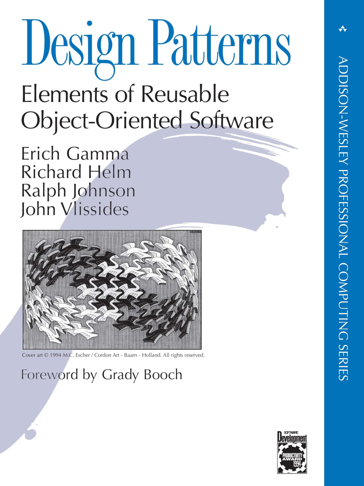
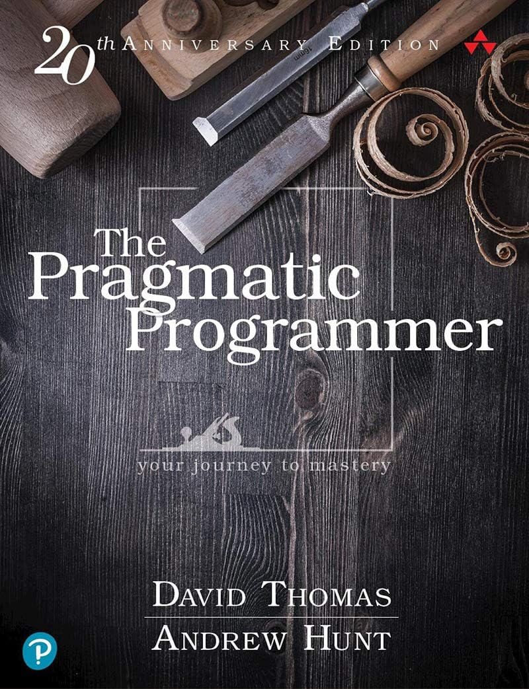

Livros para Iniciantes
Entendendo Algoritmos: Um Guia Ilustrado Para Programadores e Outros Curiosos
Entendendo Algoritmos é um guia ilustrado e prático que transforma o aprendizado de conceitos complexos de algoritmos em uma experiência simples, visual e envolvente.
Lógica de Programação e Algoritmos com JavaScript

Lógica de Programação e Algoritmos com JavaScript é um livro didático e prático que introduz os fundamentos da programação de maneira clara e acessível, especialmente voltado para iniciantes.
Use a Cabeça! Lógica de Programação
Use a Cabeça! Lógica de Programação, de Paul Barry, é um livro que ensina os conceitos fundamentais da lógica de programação de forma divertida e interativa, ideal para quem está começando na área.
Livros para Intermediários
Código Limpo: Habilidades Práticas do Agile Software

Limpo é um guia essencial para aprender a escrever código que seja fácil de entender e manter, com princípios e práticas que ajudam a melhorar a qualidade do código.
O Programador Pragmático
O Programador Pragmático oferece dicas valiosas sobre como se tornar um programador mais produtivo e eficiente, abordando a mentalidade e as práticas que separam programadores medianos dos verdadeiramente eficazes.
Padrões de Projeto: Soluções Reutilizáveis de Software Orientado a Objetos

Padrões de Projeto é fundamental para entender padrões de design em programação orientada a objetos, ajudando a criar software mais flexível e reutilizável.
Livros para Avançados
Design Patterns: Elements of Reusable Object-Oriented Software
Design Patterns é um livro clássico que descreve soluções reutilizáveis para problemas comuns em design de software orientado a objetos.
The Pragmatic Programmer: Your Journey To Mastery
The Pragmatic Programmer oferece conselhos práticos e técnicas para se tornar um programador mais eficaz e adaptável.
Clean Architecture: A Craftsman's Guide to Software Structure and Design
Clean Architecture fornece princípios e práticas para criar sistemas de software que sejam robustos e fáceis de manter.
Indique um Livro
Nos ajude a melhorar nossa biblioteca! 😊